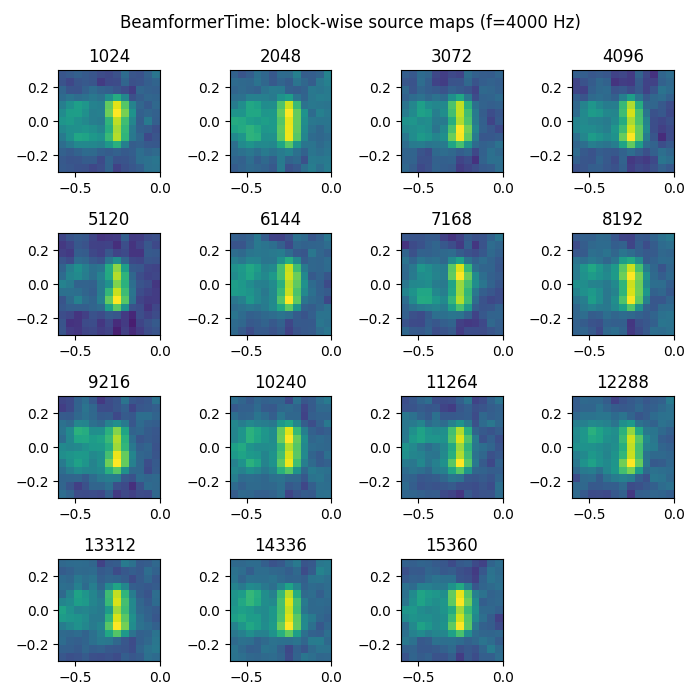
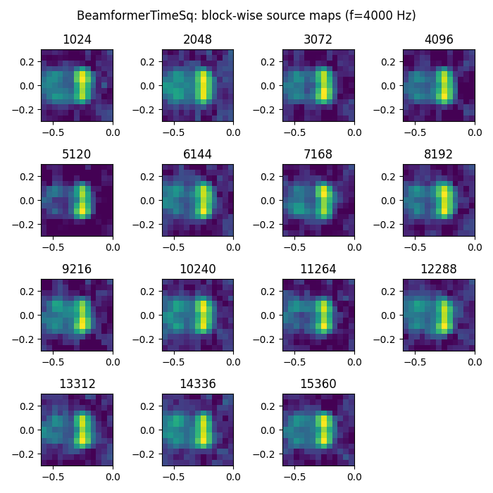
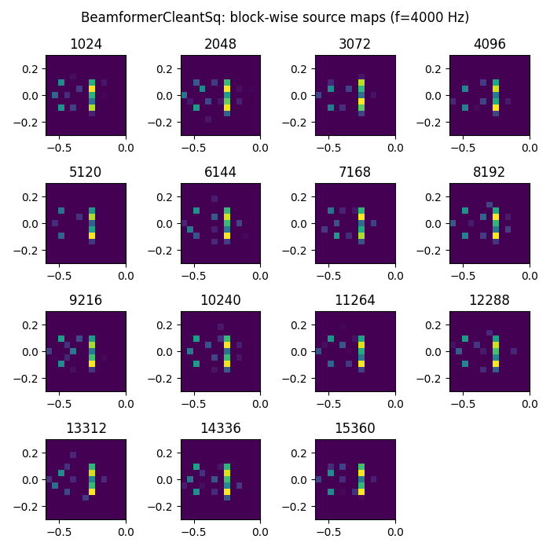
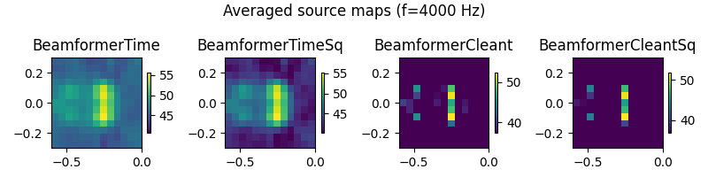

Note
Go to the end to download the full example code.
Airfoil in open jet – Time domain beamforming methods.¶
Demonstrates different microphone array methods operating in the time domain. Uses measured data in file example_data.h5, calibration in file example_calib.xml, microphone geometry in array_56.xml (part of Acoular).
import urllib
from pathlib import Path
import acoular as ac
import numpy as np
The 4 kHz third-octave band is used for the example.
cfreq = 4000
num = 3
calib_file = Path('../data/example_calib.xml')
if not calib_file.exists():
calib_file = Path().cwd() / 'example_calib.xml'
if not calib_file.exists():
print('Cannot find calibration file. Downloading...')
url = 'https://github.com/acoular/acoular/tree/master/examples/data/example_calib.xml'
urllib.request.urlretrieve(url, calib_file)
print(f'Calibration file location: {calib_file}')
time_data_file = Path('../data/example_data.h5')
if not time_data_file.exists():
time_data_file = Path().cwd() / 'example_data.h5'
if not time_data_file.exists():
print('Cannot find example_data.h5 file. Downloading...')
url = 'https://github.com/acoular/acoular/tree/master/examples/data/example_data.h5'
time_data_file, _ = urllib.request.urlretrieve(url, time_data_file)
print(f'Time data file location: {time_data_file}')
Setting up the processing chain for the time domain methods.
Hint
An in-depth explanation for setting up the time data, microphone geometry, environment and steering vector is given in the example Airfoil in open jet – steering vectors..
ts = ac.MaskedTimeSamples(
name=time_data_file,
invalid_channels=[1, 7],
start=0,
stop=16000,
calib=ac.Calib(from_file=calib_file),
)
mics = ac.MicGeom(from_file=Path(ac.__file__).parent / 'xml' / 'array_56.xml', invalid_channels=[1, 7])
grid = ac.RectGrid(x_min=-0.6, x_max=-0.0, y_min=-0.3, y_max=0.3, z=0.68, increment=0.05)
env = ac.Environment(c=346.04)
st = ac.SteeringVector(grid=grid, mics=mics, env=env)
First, classic delay-and-sum beamforming in time domain is set up using
the acoular.tbeamform.BeamformerTime class.
To produce an image of the sound sources, the beamformer time signal output for each grid-point
is zero-phase filtered, squared and block-wise averaged over time.
The result is cached to disk to prevent recalculation.
bt = ac.BeamformerTime(source=ts, steer=st)
ft = ac.FiltFiltOctave(source=bt, band=cfreq)
pt = ac.TimePower(source=ft)
avgt = ac.Average(source=pt, naverage=1024)
cacht = ac.Cache(source=avgt) # cache to prevent recalculation
Second, by using the acoular.tbeamform.BeamformerTimeSq class, the squared output of the beamformer
is calculated directly. It also allows for the removal of the autocorrelation, which is
similar to the removal of the cross spectral matrix diagonal.
fi = ac.FiltFiltOctave(source=ts, band=cfreq)
bts = ac.BeamformerTimeSq(source=fi, steer=st, r_diag=True)
avgts = ac.Average(source=bts, naverage=1024)
cachts = ac.Cache(source=avgts) # cache to prevent recalculation
Third, CLEAN deconvolution in the time domain (CLEAN-T) is applied, using the acoular.tbeamform.BeamformerCleant class.
fct = ac.FiltFiltOctave(source=ts, band=cfreq)
bct = ac.BeamformerCleant(source=fct, steer=st, n_iter=20, damp=0.7)
ptct = ac.TimePower(source=bct)
avgct = ac.Average(source=ptct, naverage=1024)
cachct = ac.Cache(source=avgct) # cache to prevent recalculation
Finally, squared signals with autocorrelation removal can be obtained by using the acoular.tbeamform.BeamformerCleantSq class.
fcts = ac.FiltFiltOctave(source=ts, band=cfreq)
bcts = ac.BeamformerCleantSq(source=fcts, steer=st, n_iter=20, damp=0.7, r_diag=True)
avgcts = ac.Average(source=bcts, naverage=1024)
cachcts = ac.Cache(source=avgcts) # cache to prevent recalculation
Plot result maps for different beamformers in time domain
from pylab import colorbar, figure, imshow, show, subplot, tight_layout, title
ftitles = ['BeamformerTime', 'BeamformerTimeSq', 'BeamformerCleant', 'BeamformerCleantSq']
i2 = 1 # no of figure
i1 = 1 # no of subplot
for b in (cacht, cachts, cachct, cachcts):
# first, plot time-dependent result (block-wise)
fig = figure(i2, (7, 7))
fig.suptitle(f'{ftitles[i2 - 1]}: block-wise source maps (f={cfreq} Hz)')
i2 += 1
res = np.zeros(grid.size) # init accumulator for average
i3 = 1 # no of subplot
for r in b.result(1): # one single block
subplot(4, 4, i3)
i3 += 1
res += r[0] # average accum.
map = r[0].reshape(grid.shape)
mx = ac.L_p(map.max())
imshow(ac.L_p(map.T), vmax=mx, vmin=mx - 15, origin='lower', interpolation='nearest', extent=grid.extend())
title('%i' % ((i3 - 1) * 1024))
res /= i3 - 1 # average
tight_layout()
# second, plot overall result (average over all blocks)
fig = figure(10, (8, 2))
fig.suptitle(f'Averaged source maps (f={cfreq} Hz)')
subplot(1, 4, i1)
i1 += 1
map = res.reshape(grid.shape)
mx = ac.L_p(map.max())
imshow(ac.L_p(map.T), vmax=mx, vmin=mx - 15, origin='lower', interpolation='nearest', extent=grid.extend())
colorbar(shrink=0.5)
title(('BeamformerTime', 'BeamformerTimeSq', 'BeamformerCleant', 'BeamformerCleantSq')[i2 - 2])
tight_layout()
show()
- 
- 

- 
- 
[('example_data_cache.h5', 20)]
[('example_data_cache.h5', 21)]
[('example_data_cache.h5', 22)]
[('example_data_cache.h5', 23)]
Total running time of the script: (0 minutes 12.032 seconds)